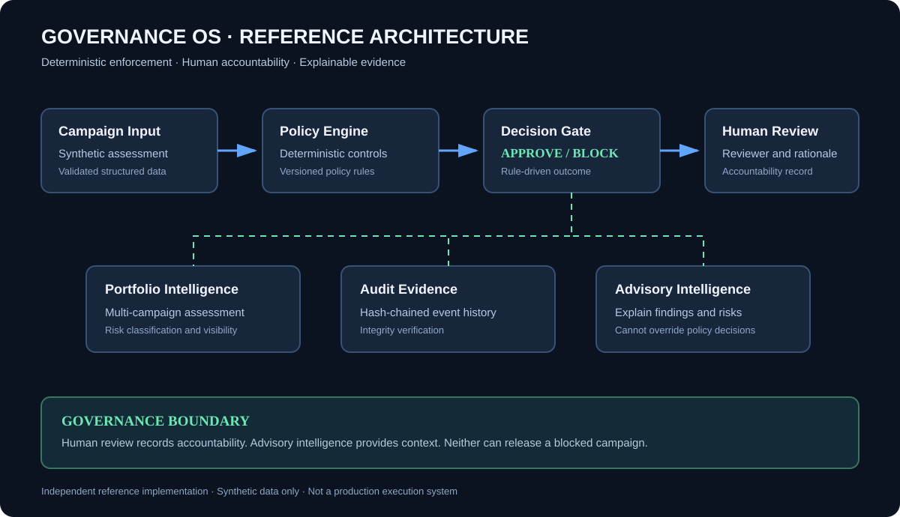

01 / CONTROL
Campaign QA
Policy-driven pre-flight validation with explainable APPROVE/BLOCK outcomes.
A practical Governance OS demonstration combining deterministic campaign quality controls, portfolio risk intelligence, human accountability and verifiable audit evidence.
Independent project · Synthetic data only · No production connection or campaign execution
Governance OS demonstrates how campaign controls, risk visibility and human decisions can work together in one explainable operating model.
Policy-driven pre-flight validation with explainable APPROVE/BLOCK outcomes.
Multi-campaign assessment, risk classification and operational visibility.
Reviewer identity, rationale and controlled governance boundaries.
Locally demonstrated hash-chained event history and integrity verification.
Independent, hands-on projects exploring practical AI applications and governed enterprise marketing operations.
An interactive project exploring AI-agent applications for digital marketing workflows. Open the live demonstration to explore the experience.
Launch Digital Marketing AI Agents ↗
Live demo hosted on Streamlit Community Cloud.
Deterministic campaign QA, portfolio risk visibility, human accountability and tamper-evident audit evidence.
Explore the architecture and engineering evidence on this portfolio.
A curated index of public repositories, interactive demonstrations and engineering documentation across enterprise MarTech, AI transformation, agentic governance and digital product innovation. Project maturity and integration boundaries are described in each repository.
Evidence-first reusable skills for campaign QA, troubleshooting, reporting, postmortems and capacity planning.
Platform-agnostic CRM operations workbench with eight task-specific workflows and structured outputs.
Reusable campaign framework and operational reference collection.
Deterministic pre-flight QA, explainable investigation and campaign governance demonstration.
Focused campaign pre-flight assessment prototype.
Governance checkpoint concept for agent-assisted campaign operations.
Independent exploration of governed AI and operational workflows.
Local-first governed operations platform with defined agents, human approval gates, evidence and audit trail.
Interactive AI adoption assessment, readiness scoring, team workshop and action planning.
Deterministic GO / HOLD / BLOCK checkpoint with evidence requirements and audit fingerprint.
Marketing workflow prototype spanning strategy, content, campaign QA and performance calculations.
A public, episode-based engineering series exploring agent security, policy enforcement, evaluation, operational intelligence, AI readiness and business value.
Blast radius, decision boundaries, policy-as-code, pre-send QA, auditability and guardrail testing.
Model boundaries, test discipline, synthetic environments, LLM adapters, verdict controls and human approval.
Playbook quality, policy invariants, workflow visibility, journey patterns, local-first insights and series navigation.
Readiness scoring, scenario modelling, team roadmaps, ROI, executive translation and data-leak protection.
Independent digital product exploration.
Early previews of focused, privacy-first tools for small businesses.
Five small demonstrations exploring future email operations and AI-readable experiences.
Early-stage repository for customer intelligence exploration.
These are independent projects and prototypes. Live integrations, AI-provider usage, production readiness and data handling vary by project; consult each repository's README for current capabilities and limitations. Do not submit confidential, customer or production data to public demonstrations.
The architecture separates policy enforcement from human accountability and advisory intelligence.
Explore the reference architecture, decision boundaries and evidence flow.

The repository contains the implementation, policy configuration, synthetic examples, documentation and automated tests.
Python-based governance components, Streamlit interface, policy configuration and test coverage.
A portfolio exploring the intersection of CRM technology, marketing operations, automation, enterprise architecture and responsible AI adoption.
Explore the implementation and follow the engineering work through the public repository.